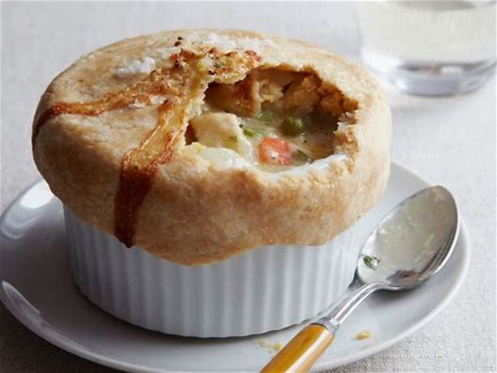

Chicken Pot Pie

Description
Chicken Pot Pie has been a favorite food in the winter months for decades.
Hearty, warming, and filling, it's a staple in most homes.
Ingredients
For the Filling:
- 3 whole (6 split) chicken breasts, bone-in, skin-on
- 3 tablespoons olive oil
- Kosher salt
- Freshly ground black pepper
- 5 cups chicken stock, preferably homemade
- 2 chicken bouillon cubes
- 12 tablespoons (1 1/2 sticks) unsalted butter
- 2 cups yellow onions, chopped (2 onions)
- 3/4 cup all-purpose flour
- 1/4 cup heavy cream
- 2 cups medium-diced carrots, blanched for 2 minutes
- 1 (10-ounce) package frozen peas (2 cups)
- 1 1/2 cups frozen small whole onions
- 1/2 cup minced fresh parsley leaves
For the Pastry:
- 3 cups all-purpose flour
- 1 1/2 teaspoons kosher salt
- 1 teaspoon baking powder
- 1/2 cup vegetable shortening
- 1/4 pound cold unsalted butter, diced
- 1/2 to 2/3 cup ice water
- 1 egg beaten with 1 tablespoon water, for egg wash
- Flaked sea salt and cracked black pepper
Steps
- Preheat the oven to 350 degrees F.
- Place the chicken breasts on a baking sheet and rub them with olive oil.
Sprinkle generously with salt and pepper. Roast for 35 to 40 minutes, or until cooked through.
Set aside until cool enough to handle, then remove the meat from the bones and discard the skin.
Cut the chicken into large dice. You will have 4 to 6 cups of cubed chicken.
- In a small saucepan, heat the chicken stock and dissolve the bouillon cubes in the stock.
In a large pot or Dutch oven, melt the butter and saute the onions over medium-low heat for 10 to 15 minutes, until translucent.
Add the flour and cook over low heat, stirring constantly, for 2 minutes. Add the hot chicken stock to the sauce.
Simmer over low heat for 1 more minute, stirring, until thick. Add 2 teaspoons salt, 1/2 teaspoon pepper, and heavy cream.
Add the cubed chicken, carrots, peas, onions and parsley. Mix well.
- For the pastry, mix the flour, salt, and baking powder in the bowl of a food processor fitted with a metal blade.
Add the shortening and butter and mix quickly with your fingers until each piece is coated with flour. Pulse 10 times, or until the fat is the size of peas.
With the motor running, add the ice water; process only enough to moisten the dough and have it just come together.
Dump the dough out onto a floured board and knead quickly into a ball.
Wrap the dough in plastic and allow it to rest in the refrigerator for 30 minutes.
- Preheat the oven to 375 degrees F.
- Divide the filling equally among 4 ovenproof bowls.
Divide the dough into quarters and roll each piece into an 8-inch circle.
Brush the outside edges of each bowl with the egg wash, then place the dough on top.
Trim the circle to 1/2-inch larger than the top of the bowl. Crimp the dough to fold over the side, pressing it to make it stick.
Brush the dough with egg wash and make 3 slits in the top.
Sprinkle with sea salt and cracked pepper. Place on a baking sheet and bake for 1 hour, or until the top is golden brown and the filling is bubbling hot.